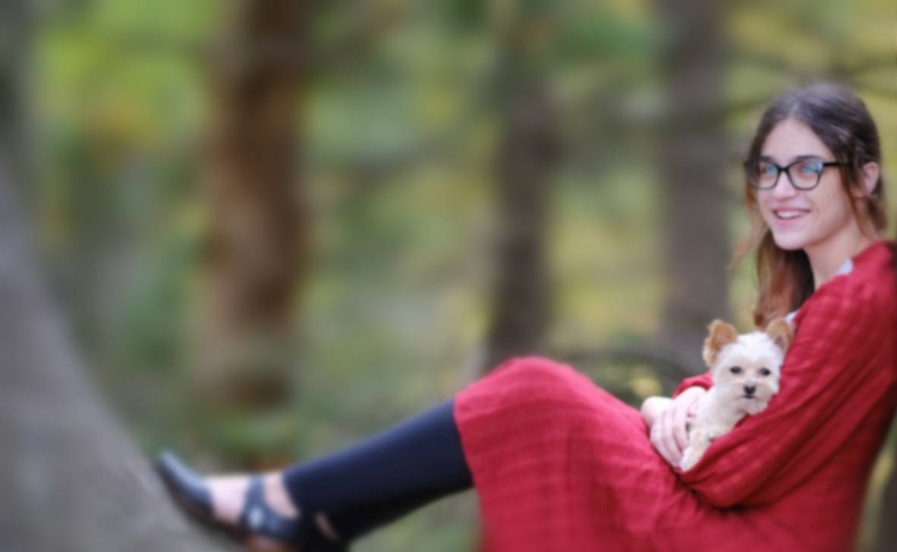
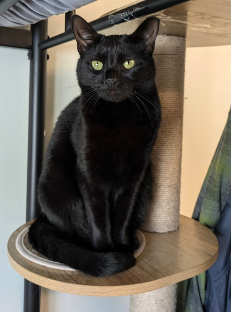
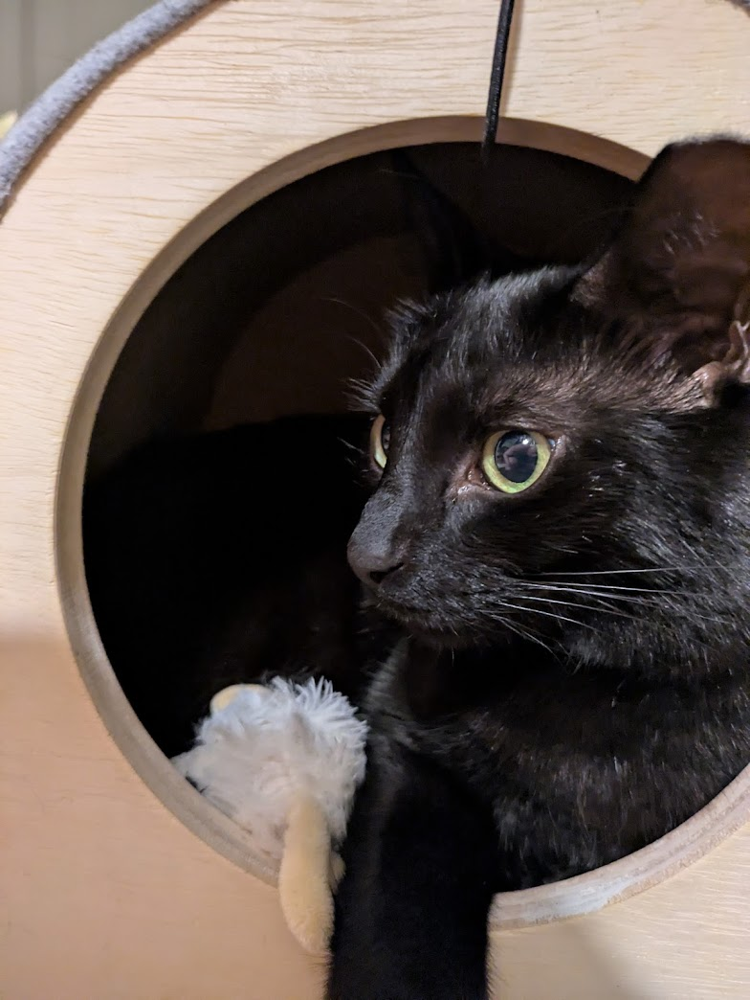
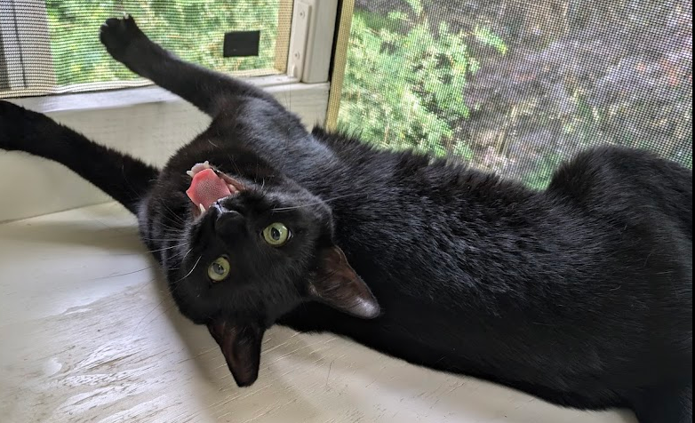
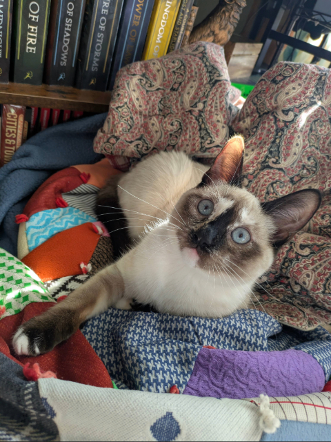
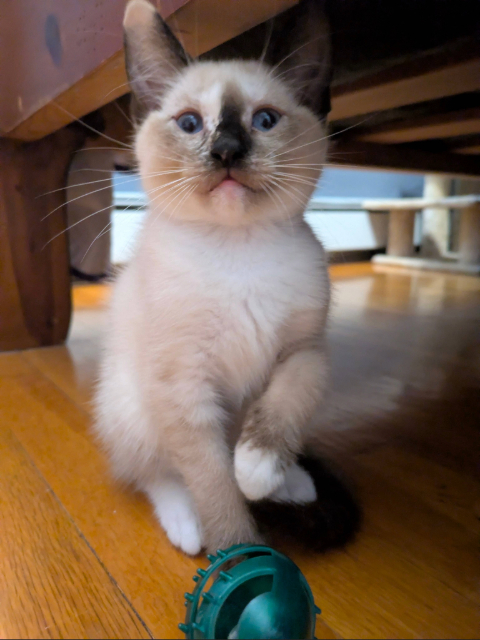
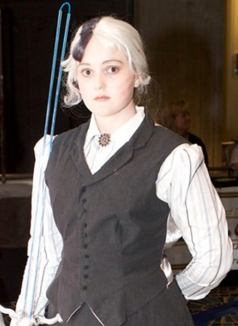

Art, crafts, messes... and other such things I have spent too much time on.
My name is Verea Miller. I am a senior at UMass Amherst, studying Data Science and minoring in English. I live in Amherst in a small studio with my two beautiful cats and my wonderful partner. Soon, I will graduate and we can move to Boston, where we can start building the rest of our lives!
Boston is where both my partner and I grew up, so we know we want to head back there. I am looking forward to being near my family again, including my younger sister who is going to college in Boston. It has been hard for me being far from my family (yes, I know I'm not actually that far) so I can't wait to get home.
I've loved doing art for as long as I can remember. It's always been one of my defining traits. Like most people, I started with just drawing and sketching. I then moved on to acrylic paint, and eventually digital art.
In addition to those more... standard... mediums, I also am a very crafty person. I can make a prop of most things out of cardboard, hot glue, and scraps from the trash (as long as you don't look too close!). This is actually my favorite method of creation, but it is unfortunately very time consuming.
Digital art is all that I have time for in my current life, and even that has been hard to keep up with during my final college semester. I am so excited to graduate, get a bigger space, and be able to create more varied pieces. I have so many ideas!
Please read about my beautiful babies. They are crucial to understanding my artwork, I swear.
<3
Esme was my first cat. I got her freshman year of college while I was still in the dorms as an Emotional Support Animal. She does her job wonderfully.
I got Esme when she was 8 months old. She had been in foster care for about 5 months while she was treated for a minor illness. Before foster care, she was a stray in NYC. I'm not sure how she ended up in Boston, but I'm glad she did.
Since she was a stray, her left ear is clipped. I actually appreciate this, since she is a "standard" color of cat and if she was to get lost I would have at least one identifiable thing to put on a poster.
When I first started looking for a cat, I wanted a younger kitten. I was hoping I could get one about 3 months old. But the woman I was speaking with to coordinate adopting a cat sent me a video of Esme yelling and trying to eat her foster mom's laptop, and who could resist that?
Before I got her, Esme's name in foster care was "Rascal", likely due to the aforementioned screaming and biting. It suits her. The name I gave her, Esmeralda, is from a character in the Discworld books by Terry Pratchett. I liked the name, and the character is a witch, so it felt fitting for a black cat.
It's now been over 3 years since I got Esme, and soon she will be turning 4. Her birthday is May 14, which is the same as my family's dog's birthday.



I had always been a bit worried that Esme was lonely when I went to work, but I never felt like I could give 2 cats the attention and care they deserved. Fortunately I began dating my partner and we decided that between the two of us we would be able to take care of a kitten.
We found Susie on Facebook Marketplace, after a friend sent her photo/post. I made the mistake of falling in love with her before we asked the price, so we paid an embarrassing amount for her, but she's worth every penny.
Like Esme, Susie gets her name from a Discworld character. There's a character with blue eyes and white hair that has a black streak in it, and when Susie was a baby, before her Siamese genes finished toasting her, she was almost entirely white, with a black streak on her nose.
When we first got Susie, she weighed 2lbs, and fit in the palm of your hand. She is not fully grown yet, but she now weighs well over 10lbs. I was hoping she would not outgrow Esme, who is 11lbs, because I like their mismatched size, but I think I might be out of luck.
Susie is full of love. (And violence, but that's not her fault, she's just a baby). Her main loves in life are, in order: Esme; my partner; whipped cream; water; and cheese.
From the day we got her, Susie has had hundreds of nicknames, and her name gets butchered in our household far more than Esme's. However, the nickname that has stuck the most is a recent one: "Soup Can," often shortened to just "Soup" for brevity. She has begun responding to this as well as she does to her actual name.


